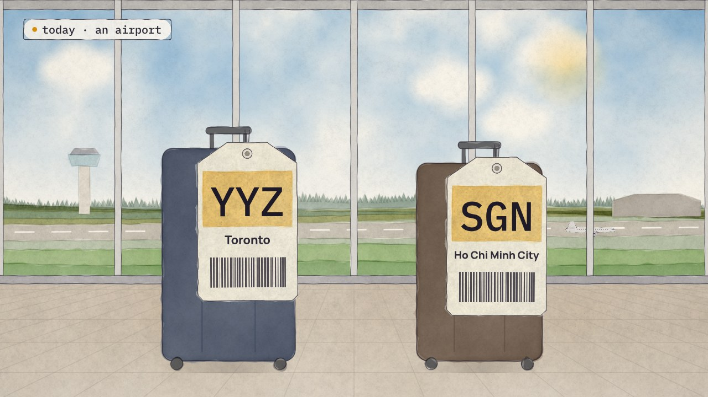
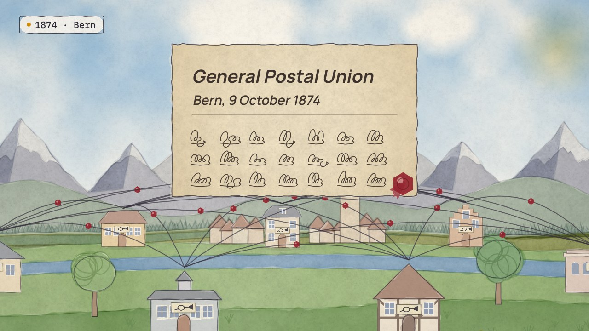

← Previous · Film 5 of 9
Lists everyone uses
Three names for one role, and a country counted three times. Give each list an owner, a date and one home.
Topics › Master and reference data › The same one, everywhere
A fundraising email reaches Linh as a student, although she told the alumni office not to ask her for donations: her no was on her alumni record, and the student system never heard it. Write each role's purposes beside its data, and keep the person's wishes with the person.
Builds on Lists everyone uses
Press Play, or pick a chapter. Turn on Pause and think to stop for one question at the end of chapters.
Download the videoCaption filesRead the script
Where next?
The four Pause and think questions, for a class or a team. Open one to see the answer.
This film's labs, and its situations, among the series' 30 labs and 72 situations. Your progress stays in this browser.
Take it apart: May they use it? →Take it apart: Where her wish sitsTake it apart: What do you hold about me?Make the call: 8 situationsEvery lab
Film 6 of 9.

← Previous · Film 5 of 9
Three names for one role, and a country counted three times. Give each list an owner, a date and one home.

Next · Film 7 of 9 →
Four ways to give many systems one person. Search before you create, and choose the lightest way that solves the problem.